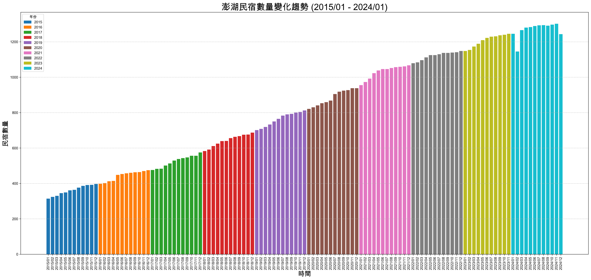

許晴論文計畫
1. 研究目的
- 探討親子民宿的核心特色與價值
- 調查家庭旅客對親子民宿的主要需求與偏好
- 評估家庭旅客在親子民宿中的實際住宿體驗
- 研究遊客對親子民宿的再次消費意願
2. 研究假設
- H1：遊客對於親子民宿的住宿需求對住宿體驗有正向關係。
- H2：遊客對於親子民宿的民宿特色對住宿體驗有正向關係。
- H3：遊客對於親子民宿的住宿體驗對再次消費意願有正向關係。
2.1. 問題：
- 有關H1的問題，請看底下關於問卷的問題，我有一些疑問寫在那裡。
- 你的H2裡有一個「民宿特色」，這個特色的定義是什麼？你的問卷裡有問到這個特色嗎？我看不到，所以我不知道你要如何驗證這個假設。
- 如果你所謂的「民宿特色」是指問卷裡的「親子民宿需求」，這似乎又和民宿特色無關，因為裡面還有資訊來源之類的問題。
- 你應該先定義清楚你的「民宿特色」是什麼，然後在問卷問相關問題，這樣才能驗證你的假設。
- 但是你的研究目的裡又沒有提到「民宿特色」，所以我不知道你為什麼要設定這個假設。
3. 問卷
3.1. 第一部分個人背景變項
- 性別
- 年齡
- 職業
- 居住地
- 教育程度
- 此行同伴
- 親子旅遊住宿的價位
- 親子住宿資訊來源(可複選)
- 了解親子旅遊、親子住宿嗎？
- 有住過澎湖親子民宿嗎 (含本次？
- 婚姻狀況
- 您一年進行家庭旅遊的次數
3.1.1. 問題
- 你是針對親子旅遊問問題，那我想知道你如何挑選你的受訪者？是找有帶小孩的遊客？還是….
- 既然是親子旅遊，為什麼會再問婚姻狀況？這個部份我不太理解….
3.1.2. 建議
- 這裡單純提供問卷分析時的操作建議，可以針對上述7. 9. 10, 11(如果真的要問這題).和12.進一步分析其與「再宿意願」的關聯性。
3.2. 第二部分親子民宿需求
3.2.1. 基礎設施
- 具備兒童專屬盥洗設備，如澡盆、小椅子及兒童專用沐浴乳
- 提供親子房型，如：卡通主題房、溜滑梯房
- 具備室內外兒童遊樂設施，如：球池、沙坑、戲水池
- 有提供親子互動場所 如:家庭院、閱讀區、繪本及塗鴉區
- 提供針對兒童的餐點或小點心
3.2.2. 服務品質
- 民宿主人親切、友善及熱情
- 服務人員能快速回應我的需求且協助解決問題
- 介紹附近鄰近景點、小吃
3.2.3. 資訊來源
- 透過網絡媒體推薦得知親子民宿
- 網路上的評價將影響我選擇民宿
- 民宿網站有提供詳細的資訊
3.2.4. 問題：
- 你要對兩個概念進行比較，並確定它們是否相關。那麼你要先把這兩個概念量化。既然是量化，那就應該有個符合量化的名稱，例如「對澎湖旅遊的滿意度」這個就很好懂，滿意度越高，表示越滿意。你這部份叫「民宿需求」，你的意思是「量表分數越高、需求越高」嗎？
- 我能理解你這部份的需求調查可以了解遊客比較重視什麼部份，例如服務品質，或是特定的親子設施，但是這些東西可以加起來嗎？為什麼加起來叫「民宿需求」？這是第2個問題，尤其是你的其中一個部份叫資訊來源，來源這東西應該無法量化吧？你的意思是「民宿資訊的易取得性」嗎？如果是的話，那評價又不應該放在這裡。
- 那麼照理說，對民宿各方面需求越高的人應該越不容易滿意(我自己猜的)，這樣你確定能符合你的研究假設「H1：遊客對於親子民宿的住宿需求對住宿體驗有正向關係。」嗎?會不會做出來的分析可能是負相關？
3.3. 第三部分住宿體驗
3.3.1. 環境因素
- 民宿周邊環境乾淨整潔
- 民宿鄰近觀光景點
- 擁有良好的停車空間
3.3.2. 心理因素
- 民宿價格符合對親子民宿的期望
- 對民宿所安排的活動感到有趣且有互動性
- 在此民宿休息讓我對親子旅行有更高的期待
3.3.3. 硬體設施
- 安全消防設施完善
- 房間內部隔音良好
- 房間內部設施齊全且整潔無損壞
- 房間具有良好的隱密性
3.4. 第四部分再宿意願
3.4.1. 再宿意願
- 下次在來時，我依舊會選擇此間民宿
- 即使價格高於同業，我仍會選擇它
- 即使有類似民宿，我依然選擇此民宿
3.4.2. 推薦意願
- 願意將此次的住宿經驗透過網絡媒體分享給大眾
- 願意為此民宿建立口碑與宣傳
- 當有人詢問住宿問題時，我會推薦此民宿
3.4.3. 問題
- 「2. 即使價格高於同業，我仍會選擇它」這個問題其實可能會導致填答者勾選「不同意」，這會有一種自己變成待宰羔羊的味道，但不代表他們不滿意這間民宿，應改為更具彈性的提問。也許可以改為「如果此民宿價格比其民宿稍高(如 10%-20%)，我仍會因設施與服務品質而再次入住？」
- 也許可以增加「若您不會再選擇此民宿，最主要的原因是？」選擇題（如「價格過高」、「設施不足」、「服務不滿意」）。也許這樣更能理解影響再宿的主因。
4. 民宿統計
1: import pandas as pd 2: import matplotlib.pyplot as plt 3: 4: # 解決中文問題 5: plt.rcParams['font.sans-serif'] = ['Arial Unicode MS'] # 步驟一（替換系統中的字型，這裡用的是Mac OSX系統） 6: plt.rcParams['axes.unicode_minus'] = False # 步驟二（解決座標軸負數的負號顯示問題） 7: 8: 9: # 轉換資料格式 10: data = [] 11: years = [2024, 2023, 2022, 2021, 2020, 2019, 2018, 2017, 2016, 2015] 12: months = list(range(1, 13)) # 1~12 月 13: 14: values = [ 15: [1245, 1145, 1266, 1280, 1283, 1289, 1293, 1294, 1291, 1297, 1302, 1243], 16: [1148, 1154, 1173, 1189, 1209, 1222, 1229, 1231, 1237, 1240, 1245], 17: [1079, 1084, 1096, 1112, 1125, 1125, 1130, 1137, 1137, 1139, 1141, 1148], 18: [955, 973, 992, 1023, 1038, 1046, 1046, 1052, 1057, 1059, 1061, 1067], 19: [821, 830, 841, 853, 859, 868, 905, 918, 924, 927, 938, 938], 20: [701, 708, 719, 733, 750, 765, 783, 790, 793, 801, 804, 812], 21: [583, 591, 611, 625, 639, 640, 656, 663, 667, 675, 676, 687], 22: [476, 482, 483, 501, 513, 529, 538, 543, 547, 556, 556, 575], 23: [398, 402, 412, 414, 448, 453, 457, 460, 463, 464, 470, 475], 24: [314, 324, 330, 345, 349, 361, 364, 376, 386, 391, 392, 397] 25: ] 26: 27: # 建立 DataFrame 28: for i, year in enumerate(years): 29: for j, month in enumerate(months): 30: if j < len(values[i]): 31: data.append({"年份": year, "月份": month, "民宿數量": values[i][j]}) 32: 33: df = pd.DataFrame(data) 34: 35: 36: # 確保數據正確排序並格式化時間標籤 37: df_sorted = df.sort_values(by=["年份", "月份"], ascending=[True, True]).copy() 38: df_sorted["時間"] = df_sorted["年份"].astype(str) + "/" + df_sorted["月份"].astype(str).str.zfill(2) 39: 40: # 定義不同年份的顏色映射 41: import matplotlib.colors as mcolors 42: 43: # 設定顏色列表，每年使用不同顏色 44: years_unique = df_sorted["年份"].unique() 45: color_map = plt.cm.get_cmap("tab10", len(years_unique)) # 使用 tab10 調色盤 46: 47: # 產生顏色對應表 48: year_color_dict = {year: color_map(i) for i, year in enumerate(years_unique)} 49: 50: # 依據年份設定顏色 51: bar_colors = df_sorted["年份"].map(year_color_dict) 52: 53: # 繪製長條圖 54: plt.figure(figsize=(28, 12)) 55: plt.bar(df_sorted["時間"], df_sorted["民宿數量"], color=bar_colors) 56: 57: # 設定標籤與標題 58: plt.xlabel("時間", fontsize=18) 59: plt.ylabel("民宿數量", fontsize=18) 60: plt.title("澎湖民宿數量變化趨勢 (2015/01 - 2024/01)", fontsize=24) 61: # 建立圖例 62: handles = [plt.Rectangle((0,0),1,1, color=year_color_dict[year]) for year in years_unique] 63: plt.legend(handles, years_unique, title="年份", loc="upper left") 64: 65: # 設定 X 軸刻度，旋轉避免重疊 66: plt.xticks(rotation=90, fontsize=10) 67: 68: # 加入網格線 69: plt.grid(axis="y", linestyle="--", alpha=0.7) 70: 71: # 顯示圖表 72: plt.savefig('images/fishkids.png', dpi=300, bbox_inches='tight') 73: 74:

Figure 1: Caption